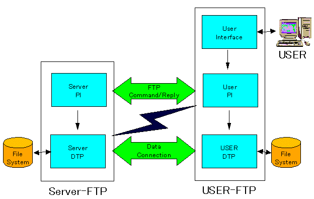

Computer Networks
Prev |
Next |
Index
Applications
FTP
Given a reliable end-to-end trasport protocol like TCP, File Transfer
might seem trivial. But, the details authorization, representation among
heterogeneous machines make the protocol complex.
FTP offers many facilities :
- Interactive Access : Most implementations provide an interactive interface
that allows humans to easily interact with remote servers.
- Format (representation) specification : FTP allows the client
to specify the type and format of stored data.
- Authentication Control : FTP requires client to authorize themselves
by sending a login name and password to the server before requesting file
transfers.
FTP Process Model
FTP allows concurrent accesses by nultiple clients. Clients use TCP
to connect to the server. A master server awaits connections and creates
a slave process to handleeach connection. Unlike most servers, the slave
process does not perform all the necessary computation. Instead the slave
accepts and handles the control connection from the client, but uses an
additinal process to handle a separate data transfer connection. The control
connection carries the command that tells the server which file to transfer.

Data transfer connections and the data transfer processes that use them
can be created dynamically when needed, but the control connection persists
throughout a session. Once the control connection disappears, the session
is terminated and the software at both ends terminates all data transfer
processes.
In addition topassing user commands to the server, FTP uses the control
connection to allow client and server processes to coordinate their use
of dynamically assigned TCP protocol ports and the creation of data transfer
processes that use those ports.
Proxy commands - allows one to copy
files from any machine to any other arbitrary machine ie. the machine the
files are being copied to need not be the client but any other machine.
Sometimes some special processing can be done which is not part of the protocol. eg. if a request for copying a file is made by issuing command 'get file_A.gz' and the zipped file does not exist but the file file_A does , then the file is automatically zipped and sent.
Consider what happens when the connection
breaks during a FTP session. Two things may happen, certain FTP
servers may again restart from the beginning and whatever portion of the
file had been copied is overwritten. Other FTP servers may ask the client
how much it has already read and it simply continues from that point.
TFTP
TFTP stands for Trivial File Transfer Protocol.
Many applications do not need the full functionality of FTP nor can they
afford the complexity. TFTP provides an inexpensive mechanism
that does not need complex interactions between the client and the server.
TFTP restricts operations to simple file transfer and does not provide authentication. Diskless devices have TFTP encoded in read-only memory(ROM) and use it to obtain an initial memory image when the machine is powered on. The advantage of using TFTP is that it allows bootstrapping code to use the same underlying TCP/IP protocols. that the operating system uses once it begins execution. Thus it is possible for a computer to bootstrap from a server on another physical network. TFTP does not have a reliable stream transport service. It runs on top of UDP or any other unreliable packet delivery system using timeout and retransmission to ensure that data arrives. The sending side transmits a file in fixed size blocks and awaits acknowledgements for each block before sending the next.
Rules for TFTP
The first packet sent requests file transfer and establishes connection between server and client. Other specifications are file name and whether it is to be transferred to client or to the server. Blocks of the file are numbered starting from 1 and each data packet has a header that specifies the number of blocks it carries and each acknowledgement contains the number of the block being acknowledged. A block of less than 512 bytes signals end of file. There can be five types of TFTP packets . The initial packet must use operation codes 1 or 2 specifying either a read request or a write request and also the filename. Once the read request or write request has been made the server uses the IP address and UDP port number of the client to identify subsequent operations.Thus data or ack msgs do not contain filename. The final message type is used to report errors.
TFTP supports symmetric retransmission. Each side has a timeout and retransmission.If the side sending data times out, then it retransmits the last data block. If the receiving side times out it retransmits the last acknowledgement. This ensures that transfer will not fail after a single packet loss.
Problem caused by symmetric retransmission -
Sorcerer's Apprentice Bug
When an ack for a data packet is delayed but not lost then the sender retransmits the same data packet which the receiver acknowledges. Thus both the acks eventually arrives at the sender and the sender now transmits the next data packet once corresponding to each ack. Therefore a retransmission of all the subsequent packets are triggered . Basically the receiver will acknowledge both copies of this packet and send two acks which causes the sender in turn to send two copies of the next packet.. The cycle
continues with each packet being transmitted twice.
TFTP supports multiple file types just like FTP ie. binary and ascii data. TFTP may also be
integrated with email . When the file type is of type mail then the FILENAME
field is to be considered as the name of the mailbox and instead of writing
the mail to a new file it should be appended to it. However this implementation
is not commonly used .
Now we look at another very common application
EMAIL
EMAIL (electronic mail - SMTP , MIME , ESMTP
)
Email is the most widely used application service which is used by computer users. It differs from other uses of the networks as network protocols send packets directly to destinations using timeout and retransmission for individual segments if no ack returns. However in the case of email the system must provide for instances when the remote machine or the network connection has failed and take some special action.Email applications involve two aspects -
- User-agent( pine, elm etc.)
- Transfer agent( sendmail daemon etc.)
When an email is sent it is the mail transfer agent (MTA) of the source that contacts the MTA of the destination. The protocol used by the MTA 's on the source and
destination side is called SMTP. SMTP stands for Simple Mail Transfer
Protocol.. There are some protocols that come between the user agent and the MTA eg. POP,IMAP which are discussed later.
Mail Gateways -
Mail gateways are also called mail relays, mail bridges and in such systems the senders machine does not contact the receiver's machine directly but sends mail across
one or more intermediate machines that forward it on. These intermediate
machines are called mail gateways.Mail gateways are introduce unreliablity.Once the sender sends to first intermediate m/c then it discards its local copy. So failure at an intermediate machine may result in message loss without informing the sender or the receiver.
Mail gateways also introduce delays. Neither the sender nor the receiver can determine how long the delay will last or where it has been delayed.
However mail gateways have an advantage providing interoperability ie.
they provide connections among standard TCP/IP mail systems and other mail systems as well as between TCP/IP internets and networks that do not support Internet protocols.
So when there is a change in protocol then the mail gateway helps in translating the mail message from one protocol to another since it will be designed to understand both. .
SIMPLE MAIL TRANSFER PROTOCOL(SMTP)
TCP/IP protocol suite specifies a standard for the exchange of mail between machines. It was derived from the (MTP ) Mail Transfer Protocol. it deals with how the nderlying mail delivery system passes messages across a link from one.machine to another. The mail is enclosed in what is called an envelope . The enveilope contains the To and From fields and these are followed by the mail . The mail consists of two parts namely the Header and the Data.
The Header has the To and From fields. If Headers are defined
by us they should start with X. The standard headers do not start with X.
In SMTP data portion can contain only printable ASCII characters
The old method of sending a binary file was to send it in uuencoded form but there was no way to distinguish between the many types of binary files possible eg.
.tar , .gz , .dvi etc.
MIME(Multipurpose Internet
Mail Extension)
This alllows the transmission of Non ASCII data througfh email, MIME allows arbitrary data to be encoded in ASCII and sent in a standard email message. Each MIME message includes information that tells the recipient the type of data and the type of encoding used.and this information alongwith the MIME version resides in the MIME header. Typical MIME header
looks like -
MIME-Version: 1.0
Content-Description:
Content-Id:
Content-Type:
image/gif
Content-Transfer-Encoding:
base64
Content Descirption : contains the file name of
the file that is being sent.
Content -Type : is an important field that specifies the data format ie. tells what
kind of data is being sent. It contains two identifiers a content type and a subtype separated by a slash.
for e.g. image/gif
There are 7 Content Types -
- text
- image
- video
- audio
- application
- multipart
- message
Content type - Message
It supports 3 subtypes namely
- RFC822 - the old mail message format
- Partial- means that ordinary message is just a part and the receiver should
wait for all the parts before putting it in the mailbox.
- external_body - destination MTA will fetch file from remote site.
Content Type - Multipart
Multiple messages which may have different content types can be sent
together. It supports 4 subtypes namely
- mixed -Look at each part independently
- alternative - The same message is sent in multiple types and formats and the receiver may choose to read the message in any form he wishes.
- parallel -The different parts of the message have to be read in parallel.
ie.audio , video and text need to be read in a synchronised fashion
- digest -There are multiple RFC messages in mail. The addresses of
the receivers are in the form of a mailing list. Although file header is long it prevents cluttering of mail box.
PROBLEMS
WITH SMTP
- There is no convenient way to send nonprintable characters
- There is no way to know if one has received mail or not or has read it or not.
- Someone else can send a mail on my behalf.
So a better protocol was proposed - ESMTP
ESMTP stands for Extended Simple Mail Transfer Protocol. It is compatible with SMTP. Just as the first packet sent in SMTP is HELO similarly in ESMTP the first packet is called EHELO. If the receiver supports ESMTP then it will answer to this EHELO packet
by sending what data type and what kind of encoding it supports. Even a SMTP based receiver can reply to it. Also if there is an error message or there is no answer then the sender uses SMTP.
DELIVERY PROTOCOLS
The delivery protocols determine how the mail is transferred by the mail transfer agent to the user agent which provides an interface
for reading mails.
There are 3 kinds
1. POP3 (Post Office Protocol) Here
the mail person accesses the mail box from
say a PC and the mail gets accumulated on a server. So in POP3 the
mail
is downloaded to the PC at a time interval which can be specified by
the
user. POP3 is used when the mail is always read from the same machine,
so it helps to download the mail to it in advance.
2.IMAP(Intermediate Mail Access Protocol)
Here the user may access the mail box
on the server from different machines so there is no point in downloading
the mail before hand. Instead when the mail has to be read one has to log
on to the server. (IMAP thus provides authentication) The mailbox
on the
server can be looked upon as a relational database.
3.DMSP(Distributive Mail System Protocol)
There are multiple mailboxes on different
servers. To read the mail I connect to them from time to time and whenever
I
do so the mail will be downloaded. When a reply is sent then it will put
the
message in a queue. Thus DMSP is like a pseudo MTA.
Ensuring Network Security
- How to ensure that nobody else reads your mail?
- How to be sure that the mail has not been seen by someone else in your name?
- Integrity ie. mail has not been tampered with
- Non-Repudiability- means once I send a mail I cannot deny it, and this fact can be proved to a third person
- Authentication
Mechanisms
(PGP & PEM)
PGP (Pretty Good Privacy) - It uses some crytography algorithm to crypt the messages.
Symmetric PGP- The key used for encryption and decryption is the same.
Asymmetric PGP - The
key used for encryption and decryption is different.Keys come in pairs - public (known to all) and private. which everybody has. Usually encryption is done using public key so that the private key is used for decryption by the receiver only for whom the message is meant.
Eg. of Symmetric PGP is DES, IDEA
Eg. of Asymmetric PGP is RSA
Symmetric is usually faster In asymmetric PGP there is a problem of key distribution. A hash function is applied on every message so that no two messages hash to the same value. Now the hash function is encrypted . If the hash function of source and destination matches then No tampering.
If the key for encryption is private then not everybody can generate the message although anyone can read it . So this scheme lacks privacy tackles the other security issues.
References
-
http://hp.vector.co.jp/authors/VA019876/sokrpg/doc/img/ftpmodel.gif
back to top
Prev| Next |
Index